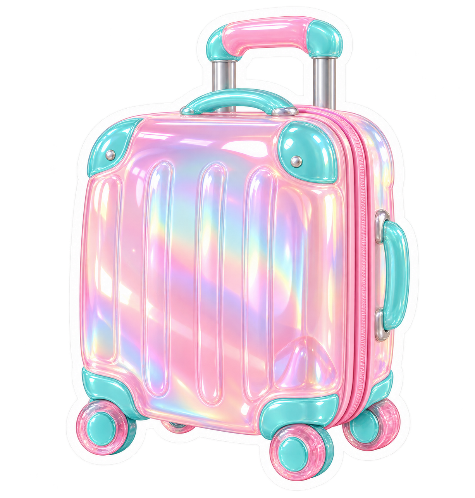

TODAY'S PAGE
오늘의 질문
OPIC PRACTICE 01 / 64
QUESTION
질문을 먼저 들어보세요
문장 확인을 누르면 영어 질문이 나타납니다
SPEAK OUT LOUD
말하기 타이머
스피킹 타이머
00:00 / 01:30
내 답변 녹음
준비됨
a little help ✎
말문이 막힌다면
Story Flow 키워드 흐름
키워드를 문장으로 연결해 보세요.
유형별 치트키 답변 구조
SAVED QUESTIONS
즐겨찾기
다시 말해보고 싶은 질문을 모았어요.

TODAY'S DATA
오늘 기록
기록은 이 브라우저에만 저장됩니다. 음성 파일과 답변 내용은 저장하지 않습니다. 아래에서 기록을 다운로드하거나 지울 수 있어요.
| 시간 | 기록 | 주제·유형 | 연습 시간 |
|---|
아직 기록이 없어요. 연습을 시작하면 여기에 쌓입니다.